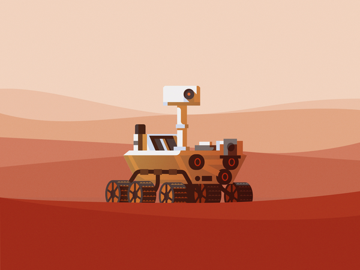
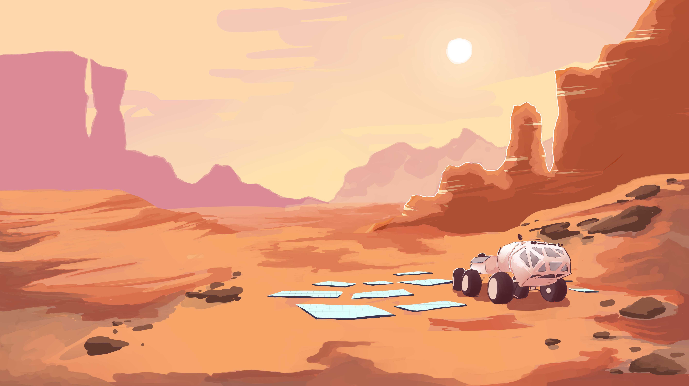
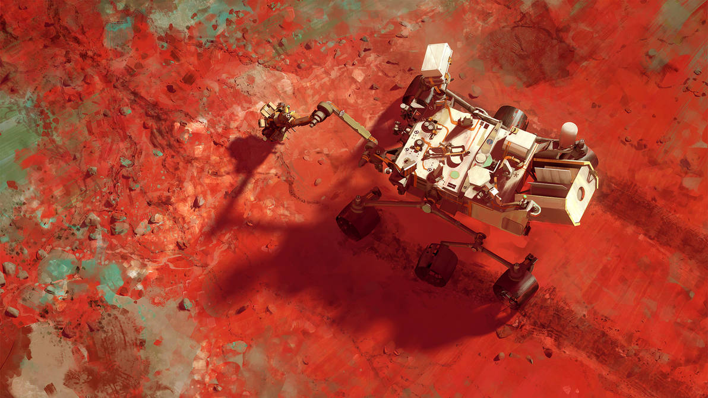
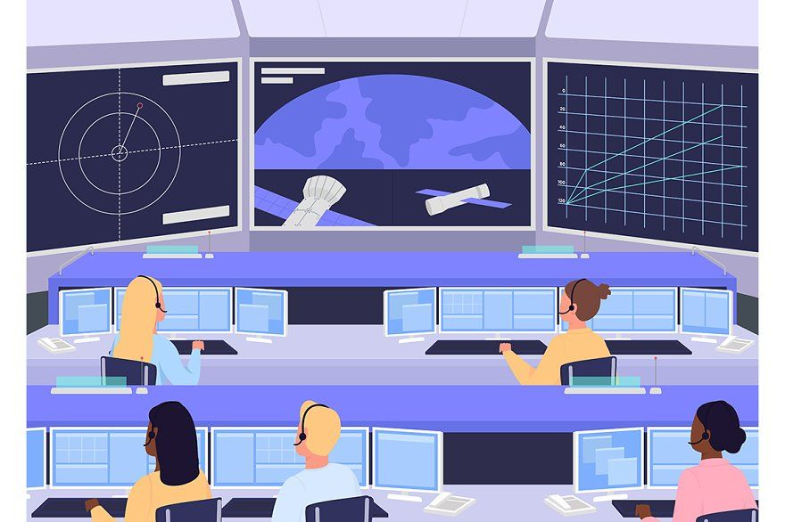
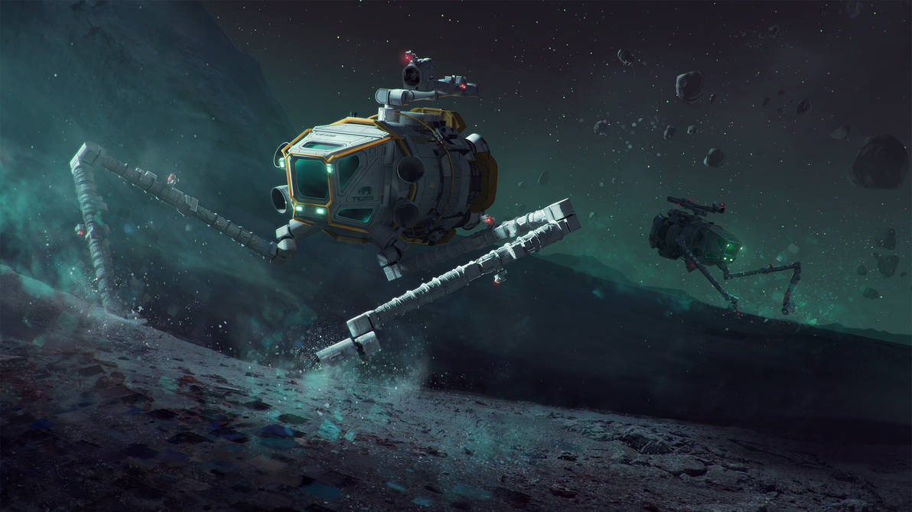

Efficiency and safety:

Fluke, A. (2023, February 17). Perseverance.
As robotics and AI technology is developed, the amount of tasks that require an astronauts with boots on the ground will be further and further diminished. This will greatly reduce risk to human life and wellbeing in space as humanity ventures outward, mitigating the need to expose our relatively fragile bodies to hazardous alien conditions.
Saving lives on Earth:

The Martian by syios on DeviantArt. (2017, February 21)
Development of these technologies will likely transfer over to robots designed to operate in hostile conditions on Earth, such as searching for survivors after a disaster or navigating an active minefield.
Data sharing:

Mars Science Laboratory - Curiosity by MacRebisz on DeviantArt. (2017, July 11)
Much like we see with the development of self-driving cars today; a network of AI rovers across many alien terrains could allow each individual machine access to a massive dataset to assist in exploration. This is especially useful in the absence of extensive pre-training data.
Innovation:

Market, C. (2022, January 7). Mission control center illustration.
Because human operators would be greatly limited in their physical access to the machines, they would be forced to make adjustments remotely. This need for flexibility would likely bring about clever software and driver innovation, developments that would spill over into other areas.
Economic Opportunity:

Prosperous Universe: Asteroid Day 2017 by MacRebisz on DeviantArt. (2017b, July 1).
As the space industry grows, so too will opportunities for new jobs and businesses. There is an incomprehensible amount of money to be made from mining minerals, and as we grow more comfortable operating outside of Earth there will be an even greater economic opportunity to dwell there permanently, a scenario where proper analysis of alien planets will prove vital.
Made 5 June 2023